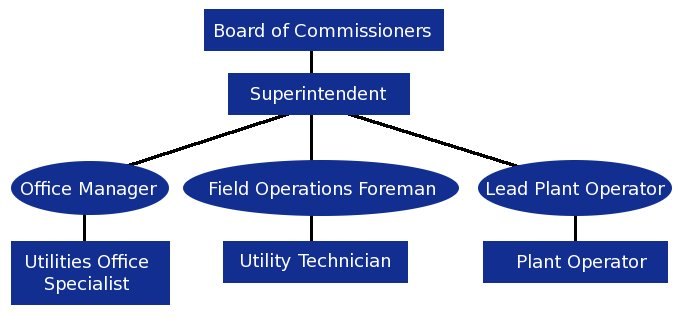
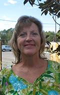

About Us
Organizational Chart | Board of Commissioners | Staff
The Homosassa Special Water District is a special district of the state of Florida. In order to provide the area with a safe central water system, the people of the area decided to form a special taxing district in 1959. The district is governed by a five member Board of Commissioners that is elected by the registered voters that reside within the district's boundaries.
Organizational Chart

Board of Commissioners
Jim Bitter
Commissioner
Seat 4
Elected to the Board in 1999, now serving his second term.
|
Lora Sipos
Commissioner
Seat 3
Elected to the Board in 2012, and is serving her first term.
|
Robert Jeeves
Secretary Treasurer
Seat 1
Elected to the Board in 2005, now serving in his second term.
|
Rodney MacRae
Chairman
Seat 5
Elected to the Board in 1993, now serving in his fifth term.
|
Dennis Seibert
Vice Chairman
Seat 2
Elected to the Board in 1990, now serving in his sixth term.
|
The Staff
David Purnell
Superintendent |
Teresa Olds
Office Manager |
Rick Sandvick
Foreman |
Gerald S Antley
Lead Plant Operator |
Steven Sibel
Plant Operator |
Tony Stephens
Plant Operator |
Ricky Fields
Utility Technician |
Mike Townsend
Utility Technician |

Tami Jo Watson
Office Utilities Specialist |
Cindy Kovacs
Office Utilities Specialist |
|